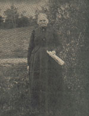

|
 |
Gunhild O. Andersdotter was born in Norway on the 23rd of November, 1834. She married Ole Wogsland who was also born in Norway (whether this was before or after her immigration to America is unknown). Together they lived in Wisconsin and had eight children. She died 23 December 1911 in New Hope Town, WI. |